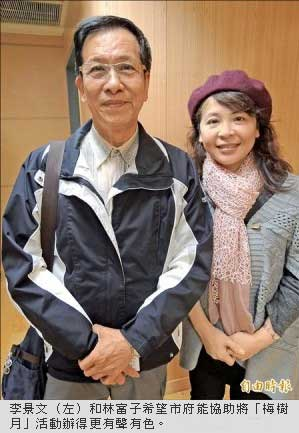
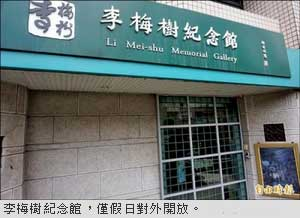

〈台北都會〉
盼訂李梅樹日 新北文化局︰可考慮
翁聿煌、張安蕎｜自由時報／新北都會新聞∣2015年2月10日
李梅樹三子求助市府補助活動經費
新北市李梅樹文教基金會擔心國寶級畫家李梅樹紀念活動「梅樹月」逐漸式微，基金會執行長、李梅樹三子李景文昨天赴市府拜會副市長侯友宜，希望能將李梅樹誕辰訂為「李梅樹日」，並且補助增列活動經費；新北市文化局副局長于玫說，文化局無法編列經費補助，但會考慮基金會提出訂定紀念日的需求。
李景文說，父親對台灣和老家三峽有深厚情感，所以父親過世後，家人在三峽設立紀念館，希望提供民眾緬懷李梅樹其人其事及作品的空間，如今三兄弟已年邁，希望政府能協助讓李梅樹的藝術成就和畫作長久妥善保存。
基金會公關組長林富子說，紀念館為私人文物館，文化部每年一百餘萬元的補助經費有限，讓歷年活動難以提升能見度，嘉義市為紀念畫家陳澄波，將其誕辰二月二日訂為「陳澄波日」，希望新北市政府也能考慮將李梅樹誕辰訂為「李梅樹日」，區公所也應加強紀念館的宣傳及導覽資訊。
林富子也建議市府，除了國小課文有提到李梅樹，教育局應鼓勵三峽地區國中小將紀念館列為校外參訪重點，補助學童參訪保險費、校園栽植梅樹，及補助紀念館作品巡迴社區學校展出經費；侯友宜指示由文化局結合相關局處共同協助。
今年「梅樹月」活動 三月廿八日起舉行
李景文說，「梅樹月」活動舉辦三年來逐漸從單純靜態畫展、到結合國內外藝文團體演出，愈來愈受民眾歡迎，今年的「梅樹月」將於三月廿八日至四月廿六日舉行，期間將邀請德國、日本的音樂團體到三峽客家文化園區演出紀念音樂會，並且以「無牆美術館」概念，安排李梅樹的作品在三峽地區十餘個公共空間展出，歡迎遊客連結祖師廟、老街與紀念館景點，感受李梅樹對三峽區的藝術人文影響。
小檔案︰李梅樹紀念館
李梅樹生於一九○二年三月十三日，卒於一九八三年二月六日，享壽八十一歲，出生和入土之處都在他最鍾愛的三峽。李梅樹是台灣著名畫家，在藝術界與陳澄波、李石樵、楊三郎等人齊名，還曾任三峽鎮代會主席、三屆台北縣議員和大學教授。
李梅樹於一九四七年曾主導重修三峽祖師廟工程，祖師廟的建築及雕刻特色也因此聞名國際，李梅樹過世後，後代在三峽購屋設立李梅樹紀念館，館內存放數百幅李梅樹的作品，價值連城，新北市文化局有意在三峽興建市立美術館，未來啟用後盼能將其畫作納入館藏。